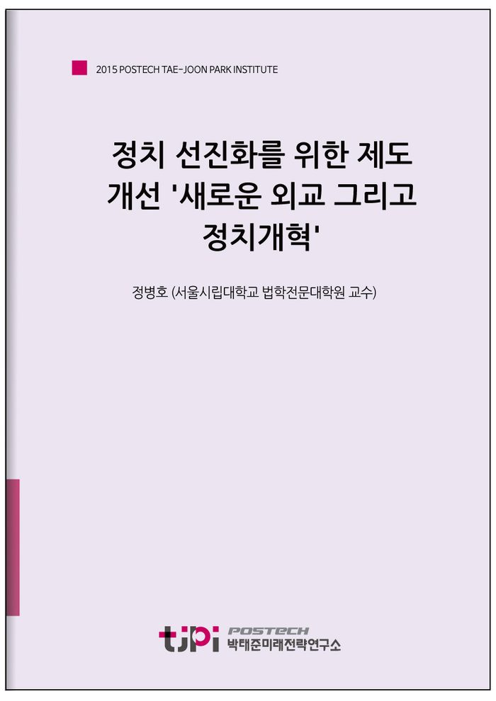

저자 정병호 (서울시립대학교 법학전문대학원 교수)보도일 2015-10-19

요 약
신기술 도입으로 인한 산업구조 개편 문제, 경제력의 재벌 집중 문제, 계층간 지역간 양극화 문제, 노사관계 합리화 문제, 청년실업 문제, 급격한 인구감소로 인한 경제활력 저하 문제, 급격한 노령화로 인한 복지문제 등 10년 내 해결해야 할 과제가 무수히 많다. 하지만 이런 과제를 해결하기 위해서는 무엇보다도 정치의 선진화가 이루어지지 않으면 안 된다.
정치의 선진화를 위해서는 무엇보다도 제왕적 대통령제와 대통령 선거의 승자독식 구조를 개선해야 한다. 이를 위해서는 대통령에 집중된 권한을 분산시켜 삼권분립을 강화하는 방향으로 개헌할 필요가 있다. 의회는 양원제로 전환하는 것이 바람직하다. 미국과 독일 등과 같이 상원에 지역대표성을 인정함으로써 지역 간 불균형 발전을 시정할 수 있기 때문이다.
다음으로 우리나라 정치에서 정책대결은 실종되고, 보수와 진보세력 간극한투쟁으로 치닫게 된 데는 유권자의 다양한 정치성향을 반영하지 못하는 선거제도도 한 몫을 하고 있다. 마지막으로 우리의 정치가 유권자의 눈높이를 맞추지 못하는 또 다른 이유는 정당 내부의 민주주의가 실현되지 않고 있기 때문이다.
정당 내부부터 하의상달의 민주주의를 실현하기 위해서는 무엇보다도 당원이 깨어 있어야 한다. 그러나 현행 정당법은 비교법적으로 유례를 찾기 어려울 정도로 폭넓게 당원자격을 제한함으로써 건강한 정당구성부터 막고있다. 특히 대학교수를 제외한 교원과 공무원의 당원자격을 부인하고 있는 것은 재고하여야 한다. 우리사회에서 가장 역량 있고 안정적인 직업군이 정당활동에 적극적으로 참여하는 것을 원천봉쇄하고 있는 셈이다. 이 제한은 과거 이들이 선거에 불법적으로 동원된 경험에 따른 것이다. 그러나 이제 국민의 정치의식이 크게 신장되었기 때문에 제한을 철폐해도 큰 문제가 없을 것으로 본다. 공무원이나 교원이 업무를 수행하면서 정치적 중립을 지키지 않을 경우에는 엄한 징계 및 처벌을 하면 된다. 교원과 공무원의 정당활동 보장은 정당의 정상화에 도움을 줄 수 있다고 본다.
----------------------------------------------------------------
박태준미래전략연구소는 2015년 미래전략 연구 대상으로 선정한 ‘10년 내 한국사회가 당면할 가장 중요한 이슈는 무엇이며, 어떻게 대응해야 하는가?’라는 주제에 대해 다양한 분야에서 업적을 이룬 전문 지식인들의 생각을 들어보았습니다.
< 전문가 36인의 에세이를 엮어 '10년 후 한국사회'라는 책으로 발간되었습니다. 도서보기 >
목 차
정병호
서울시립대학교 법학전문대학원 교수
독일 괴팅엔대학교 법학 박사. 현재 서울시립대학교 법학전문대학원 교수, 한국농수산식품의약법학회장. 저서 Darlehensvalutierung im roemischen Recht, Wallstein Verlag, 2002.
내 용
[2015 전문가 에세이] 정치 선진화를 위한 제도 개선 '새로운 외교 그리고 정치개혁'
정병호 (서울시립대학교 법학전문대학원 교수)